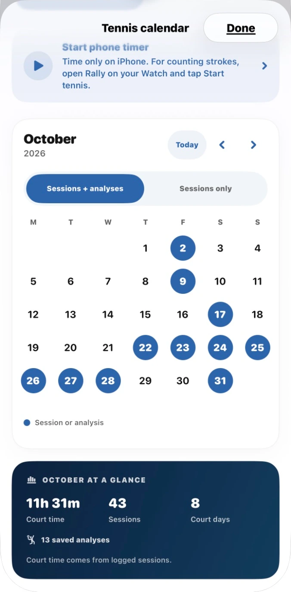
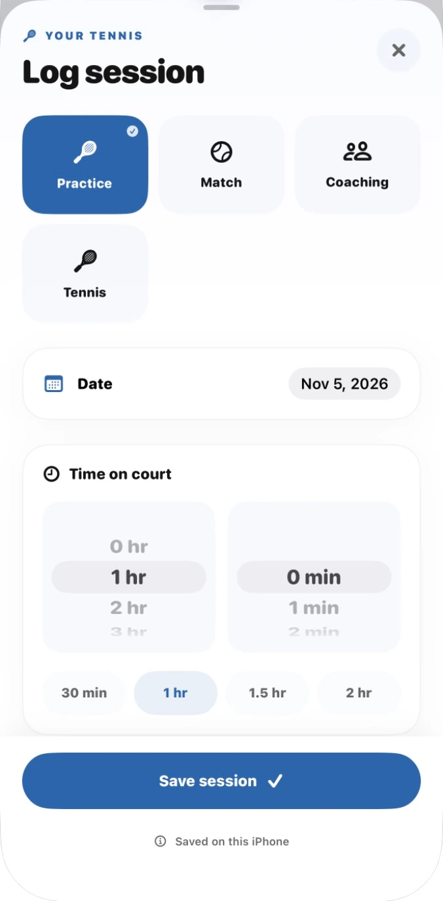
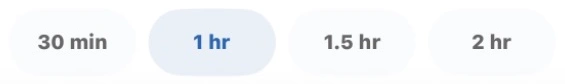
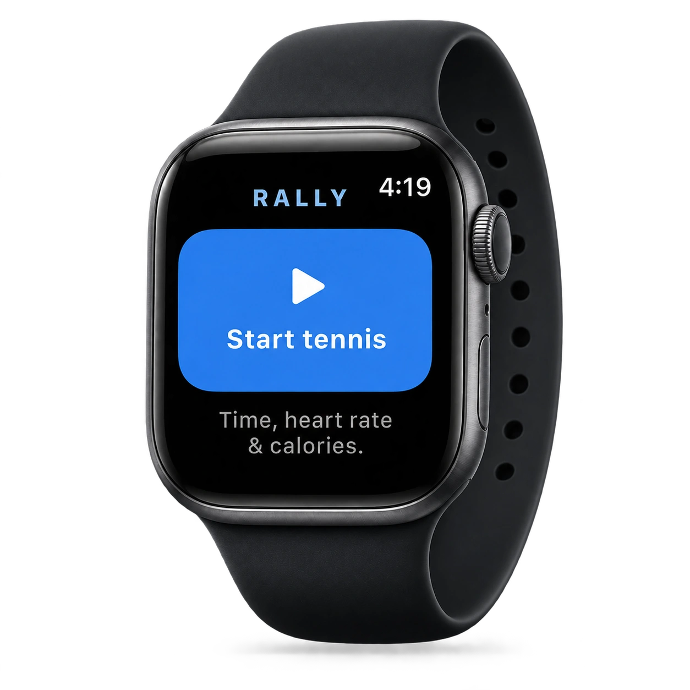
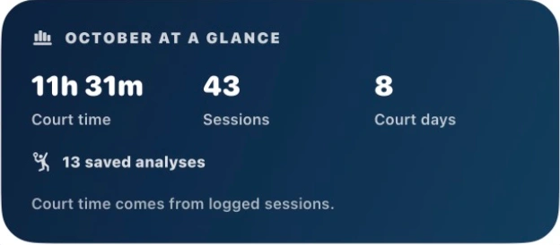

Log Sessions
Get Better
Stay Motivated
Rally AI is a workout tracker for iOS. Log your tennis sessions and track progress.
Your tennis. All in Rally.
Free tennis journal · Swing analysis with Rally Pro




Log sessions
Give every session a place in your tennis journal. Keep a simple record of when you played and how long you spent on court.
- Log practice, matches, and coaching
- Choose your session date
- Record your time on court
- Use quick duration options
- Keep your tennis journal for free
Track your progress
See the time you’re putting into your game. Bring your sessions and saved analyses together in your tennis calendar.
- Browse your tennis calendar
- See court time at a glance
- Track sessions and court days
- Find your saved analyses
- View sessions on their own

See the details.
Find your focus.
Sit lower into your legs, then drive up through contact to create more force.
Understand your swing
Turn a suitable tennis video into a clearer practice focus. Review your movement and take your coaching feedback onto the court.
- Record or upload a swing video
- Analyze forehands, backhands, and serves
- Review available skeleton movement
- Get a personalized coaching priority
- Return to your saved feedback
Swing analysis requires Rally Pro. Two-handed backhands supported. Chart reproduces the built-in walkthrough example, not a measured customer outcome.
Rally on Apple Watch
Keep your tennis session close at hand. Start a workout on your Watch or paired iPhone and follow your time on court.
- Start, pause, resume, and end a session
- See elapsed time on your wrist
- View heart rate and calories when available
- Bring Tennis workouts into your journal
- Free, with optional Apple Health access
Watch recording can continue while your iPhone is locked. Imports may finish after you unlock it.
How do I record my swing?
Record a video in Rally or choose one from your iPhone. Follow the in-app filming guidance for your selected stroke. Rally checks capture quality; clips that are unsuitable for analysis may be declined.
Which strokes can Rally analyze?
Swing analysis supports forehands, two-handed backhands, and serves.
What devices do I need?
Rally runs on iPhone with iOS 17 or later. Swing analysis needs an internet connection. An optional Apple Watch companion requires watchOS 10 or later; you do not need a Watch to analyze a swing.
Do I need a subscription?
New swing analyses and analysis-video exports require Rally Pro. Monthly and annual subscriptions renew automatically unless canceled. Your free tennis journal and saved analysis results remain accessible after Pro expires. Review the price, trial eligibility, and billing terms in the app before purchase.
What happens to my video?
For swing analysis, Rally removes audio on your iPhone, then uploads the clip for server processing. Saved swing history is stored on your iPhone. Standalone local video modes have different handling. See the Privacy Policy for processing, retention, and deletion details.
Who is Rally for?
Rally is for adults 18 and older who want a clearer focus for tennis practice. It is a practice tool, not a replacement for an in-person coach. Results can be imperfect, and low-confidence or unsuitable clips are labeled or declined.
SEE IT. UNDERSTAND IT. PRACTICE IT.
Your next session
starts with one swing.
Bring a little more purpose to the court.
Download on the App Store For iPhone · Swing analysis requires Rally Pro